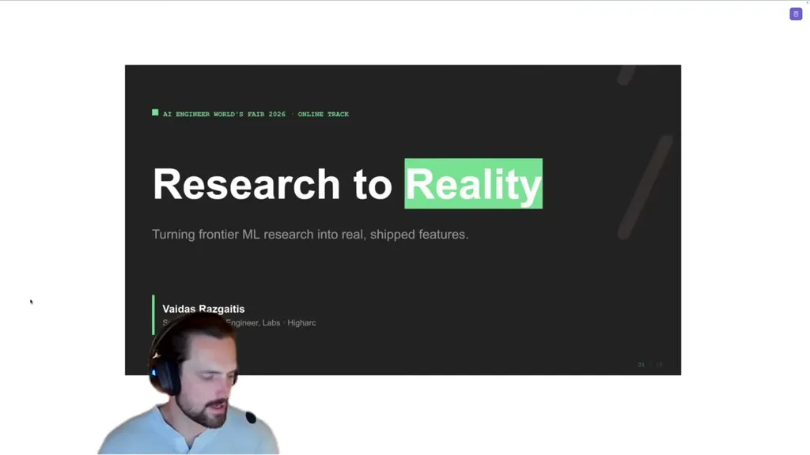
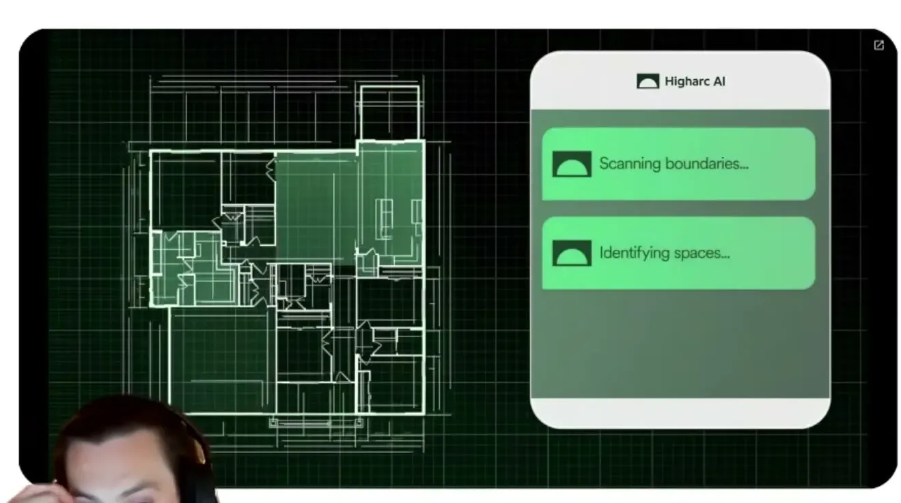
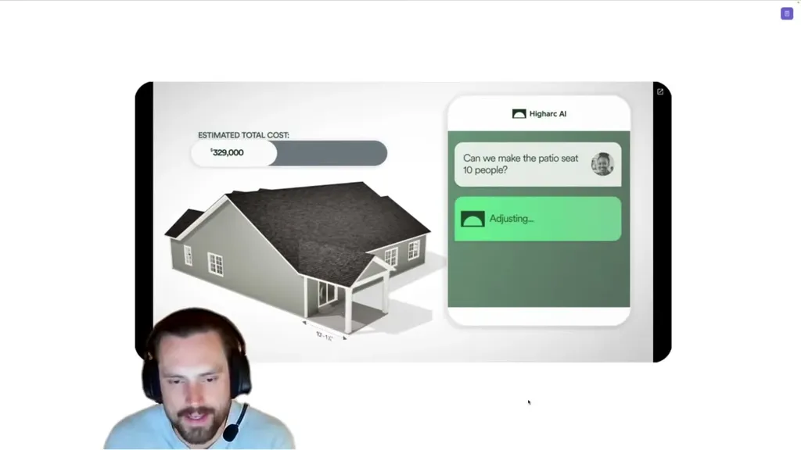
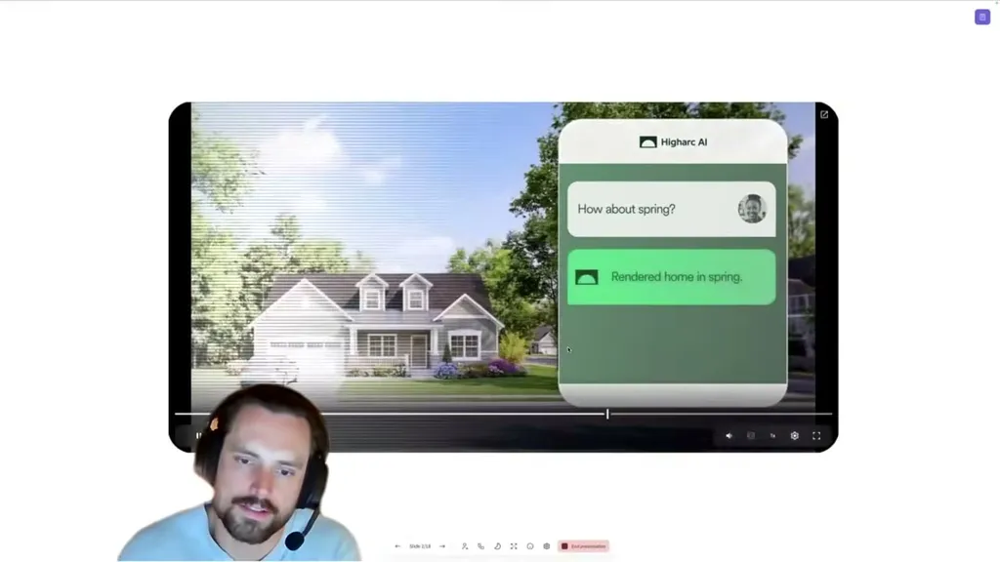
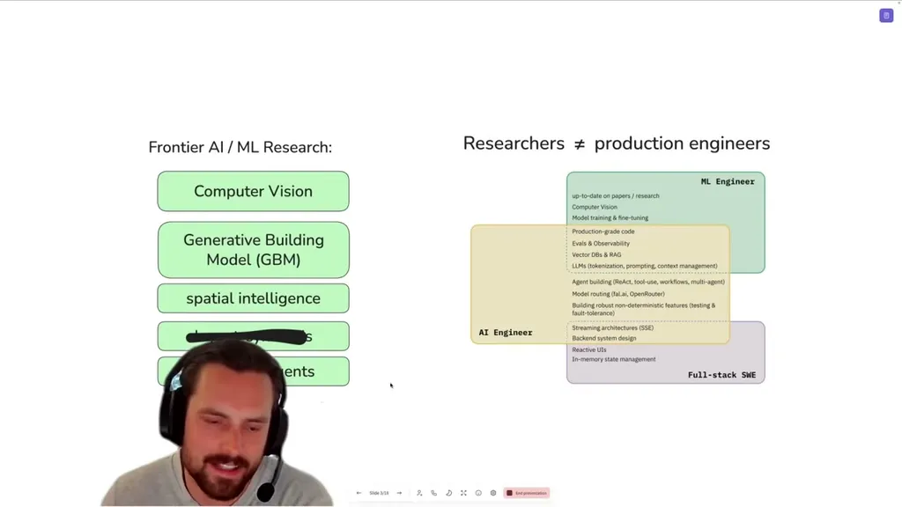
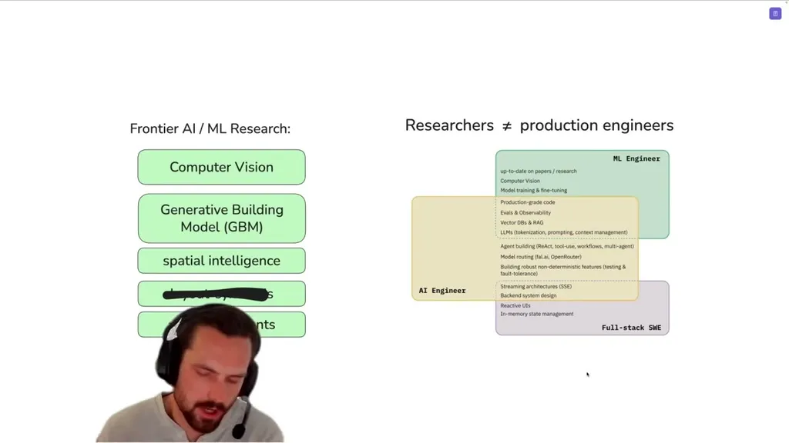
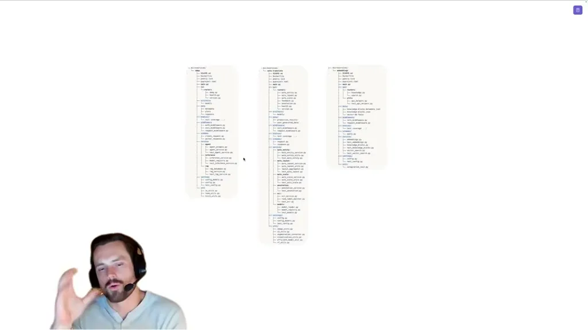
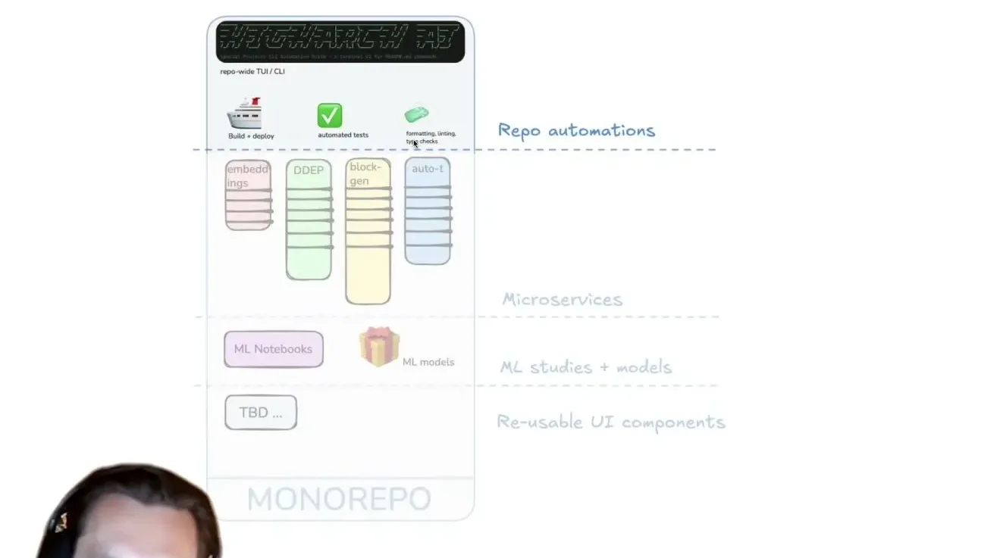
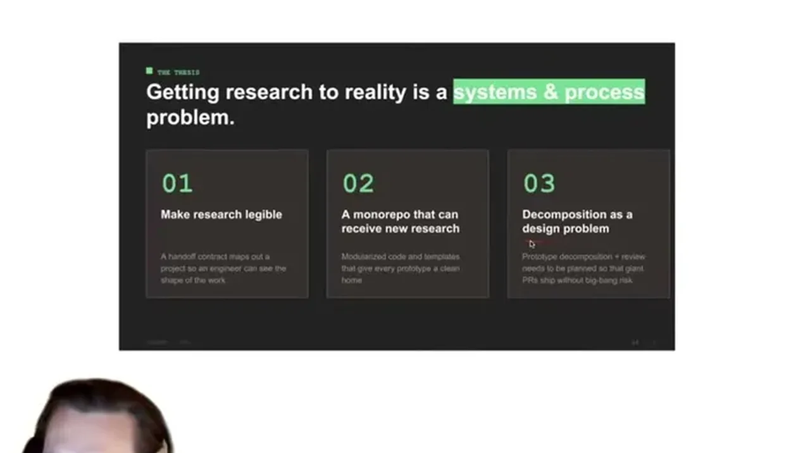

Gives a concrete process for the handoff between ML researchers and production software engineers: a research prototype taxonomy document, a decoupled microservice-per-researcher mono repo, and Graphite stacked diffs for decomposing larg...
This traces the handoff Higharc uses to get a research prototype into production: a taxonomy document makes it legible, the mono repo of one-researcher-per-microservice isolates the work, and Graphite stacked diffs let subject matter experts review slices asynchronously (ours).
“our uh ML researchers who are very up-to-date with the latest papers and can uh pull together these concepts in novel and creative ways to develop new features”
said at 01:34“the first thing we'll look at is research legibility. So, let's say you have a ML researcher has produced a prototype concept.”
said at 02:35“how important it is to write out technical design documents, request for comment, whatever you want to call it, specifications before building software as a way to align teams”
said at 03:37“we call the research prototype taxonomy document. So, it's really just a technical design document from software engineering uh with some specific twists”
said at 04:08“we basically have a a separate um repository from our core product repo and this is uh all Python based, right? It's all AI ML stuff and it's basically a mono repo of uh cleanly isolated and fully decoupled”
said at 06:43“it's pretty much a one-to-one researcher to microservice ratio. So, we find that works really well.”
said at 07:16“we really like Graphite because it allows for asynchronous review, right? I could be working on a PR all the way up here while a domain specialist is still reviewing a different PR.”
said at 11:24“is it obvious where they should concentrate their efforts? And is it clear uh what kind of tasks they need to pluck off to bring this prototype into production?”
said at 12:56








| Stance | Claim | t |
|---|---|---|
| warns | ML researchers are current on the latest papers and combine concepts creatively but have not typically worked as software engineers responsible for production-grade APIs. | 01:34 |
| recommends | The first of three levers for speeding research-to-production is research legibility: making a researcher's prototype concept digestible to incoming engineers. | 02:35 |
| recommends | Citing the pragmatic engineer, writing technical design documents or specs before building software is important for aligning teams as they scale. | 03:37 |
| asserts | Higharc requires a research prototype taxonomy document from every research prototype, an ML-specific analog of a standard technical design document. | 04:08 |
| asserts | Higharc's ML/AI work lives in a separate, all-Python mono repo of cleanly isolated and fully decoupled microservices. | 06:43 |
| asserts | The mono repo structure works out to roughly a one-to-one ratio of researcher to microservice. | 07:16 |
| recommends | Graphite is used for stacked diffs to decompose large monolithic research prototypes because it allows asynchronous review by different subject matter experts in parallel. | 11:24 |
| recommends | A health check for whether research legibility is working is whether it's obvious where staff should focus and what tasks to pull off to reach production. | 12:56 |
Machine-readable copy embedded in this page (script#ontology) and in the corpus ontology.